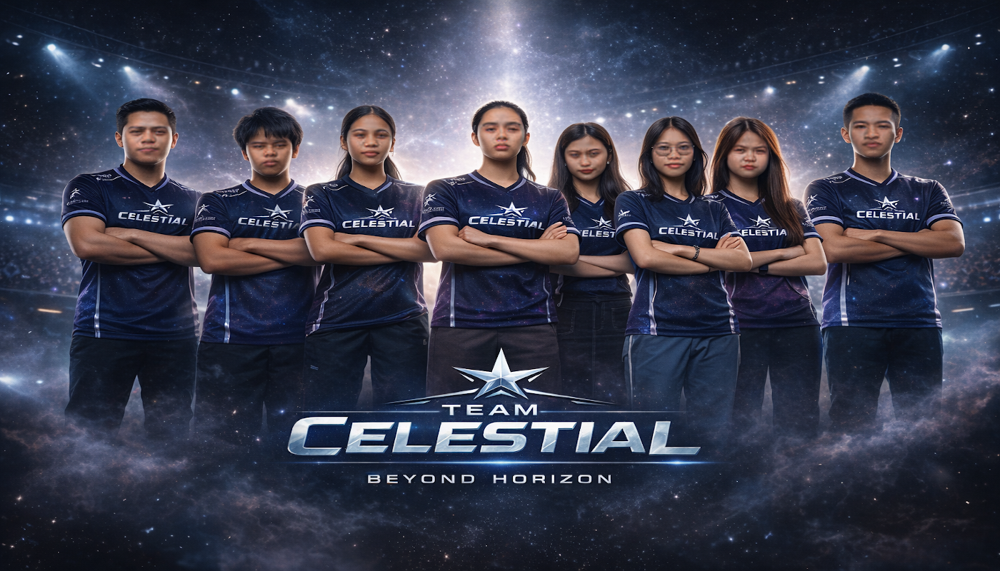
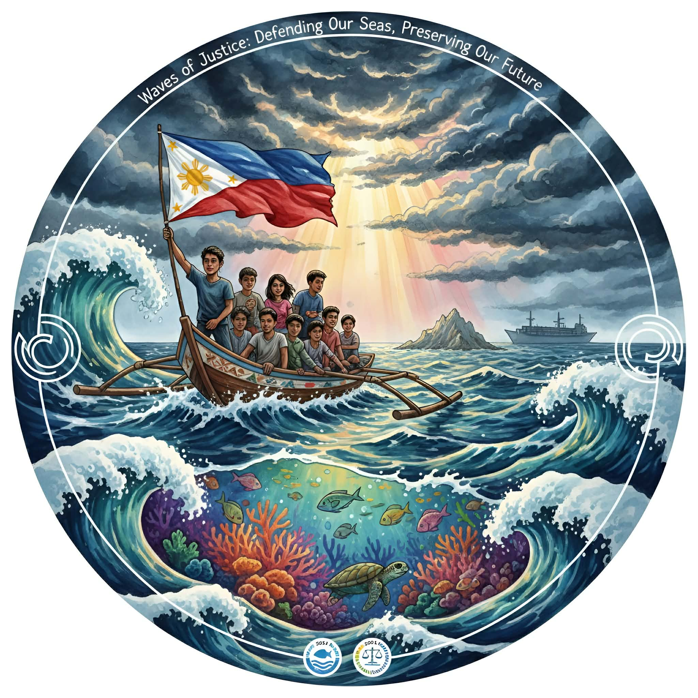

0
Team Members

1st Year BSCS-1C
CELESTIAL "Beyond Horizon"
We are TEAM CELESTIAL, BSCS students team presenting our school project work in Arts Appreciation.
From planning to final presentation, we combined research, design, and coding to deliver a complete class portfolio project.
0
Team Members
0
Main Deliverables
0
Weeks of Work
What We Do
Defined goals, timelines, and responsibilities using weekly sprint plans and teacher feedback.
Created wireframes and interface prototypes with accessibility and usability principles from class.
Built and tested responsive web pages using HTML, CSS, and core programming concepts from the course.
Our Workflow
01
Defined project goals, audience, and deliverables with clear weekly targets.
02
Created wireframes and interface drafts, then refined based on team feedback.
03
Built responsive pages, interactions, and content sections using local assets.
04
Checked usability, fixed issues, and finalized visuals for project submission.
Student Team
Team Leader / Project Manager
Led CELESTIAL, managed planning, and coordinated final project submission.
UI/UX Designer
Designed layouts, interface flow, and visual consistency across the portfolio.
Content and Documentation Lead
Prepared project write-ups, section copy, and supporting documentation.
Co-Leader / Frontend Developer
Supported team coordination and built responsive page sections.
Web Development Support
Assisted with structure updates, asset integration, and feature improvements.
Quality Assurance Lead
Checked layout consistency, tested interactions, and tracked revisions.
Research and Data Analyst
Handled project research, references, and insights used in planning decisions.
Presentation and Communications Lead
Organized final reporting, speaking flow, and communication materials.
Selected Work
A celestial-inspired circular emblem featuring zodiac symbols surrounding a glowing lunar core, set against a galaxy backdrop. The design blends mysticism, balance, and cosmic energy in an elegant gold-accented composition.

A powerful maritime-themed illustration of young advocates sailing under the Philippine flag, symbolizing unity, environmental protection, and justice. The artwork highlights ocean conservation and hope for a sustainable future.
A professional eSports team banner showcasing Team Celestial in futuristic uniforms against a cosmic arena background. Bold, unified, and competitive representing strength, teamwork, and ambition beyond limits.
Visual Highlights
Let's Work Together
Contact our project team or supervising teacher for details about the process, tools, and outcomes.